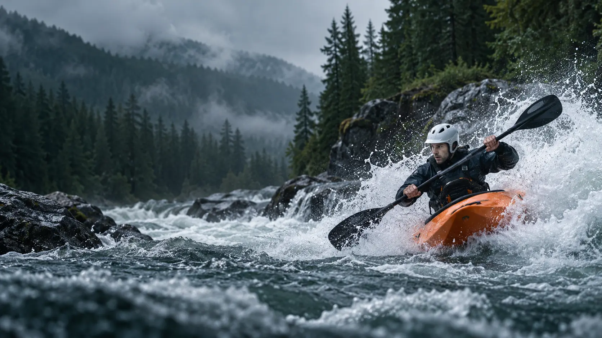

Рафтинг
Командная дисциплина на надувных судах. Томские экипажи выступают в классах R4 и R6.

Томская область · Копылово · Киргизка
Развиваем рафтинг и гребной слалом, готовим спортсменов и создаём пространство для активной жизни на реке Киргизке.
История
Томская школа спортивной гребли на бурной воде выросла из Копыловского туристического клуба, созданного Александром Иннокентьевичем Широковым.
В Копылово создан туристический клуб — точка отсчёта будущей спортивной школы.
01После перехода от туристического направления к спортивной гребле собрана первая команда по рафтингу.
02Алексей Широков формирует новую детскую команду — основу будущих международных результатов.
03Официально зарегистрирована Федерация рафтинга и гребного слалома Томской области.
04Спортивные направления
Спортсмены Томской области участвуют в региональных, всероссийских и международных соревнованиях.
Командная дисциплина на надувных судах. Томские экипажи выступают в классах R4 и R6.
Олимпийский вид спорта: спортсмен проходит водную трассу через систему ворот. В регионе проводятся старты в классах каяков и каноэ.
Копылово · река Киргизка
Киргизка служит площадкой для соревнований по рафтингу и гребному слалому. В апреле 2026 года здесь прошли Всероссийские соревнования среди юниоров и юниорок до 20 лет.
Здесь соединяются спорт высших достижений, детская подготовка и семейная активность круглый год.
Проект 2026–2027
Победитель второго конкурса Фонда президентских грантов 2026 года. Проект создаёт круглогодичный маршрут вдоль Киргизки для школьников, подростков и семей.
Победы
Воспитанники томской школы рафтинга становились призёрами и победителями крупнейших международных соревнований.
Бронза чемпионата мира среди юношей в Коста-Рике.
Чемпионы мира до 19 лет в Новой Зеландии.
Серебро чемпионата мира в Бразилии и победа на первенстве Европы.
Победа на чемпионате мира до 19 лет в Индонезии.
«Одиссей-Азимут-Томск» выигрывает общий зачёт Кубка мира в Боснии и Герцеговине.
Сезон 2026
Контакты
Поддержка спорта. Генеральный спонсор соревнований 2026 года — компания «Сибагро». Питание спортсменов предоставила компания «САВА». Федерация благодарит Департамент спорта Томской области, тренеров, судей, родителей, друзей и болельщиков.